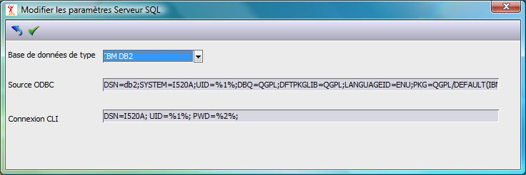

Le serveur XLAN utilise l'interface CLI (Call Level Interface) pour accéder à la base DB2.
Cette interface nécessite une connexion à la base. La chaîne de connexion à fournir lors de cette connexion est paramétrable.
Dans la chaîne de connexion les paramètres suivants désignent :
DSN : le nom de la source de données. Il correspond généralement au nom du serveur IBM i. Attention ce nom est dépendant de la casse, il est généralement en majuscule.
UID : le nom du profil pour la connexion à la base. Le jocker %1% est remplacé par le profil (schéma) correspondant à la base de données paramétrée dans la table des serveurs (par exemple ERPDivalto). Elle doit également correspondre à un code utilisateur d'Harmony créé dans le fichier des utilisateurs avec son mot de passe.
PWD : le mot de passe de l'utilisateur UID. Le jocker %2% est remplacé par le mot de passe de l'utilisateur correspondant à la base. Il provient du fichier des utilisateurs d'Harmony.
Voir : Création des utilisateurs Harmony et Création du schéma dans la base DB2
